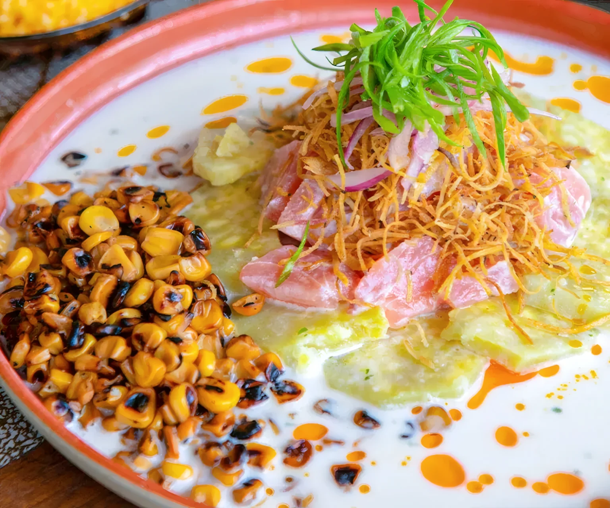
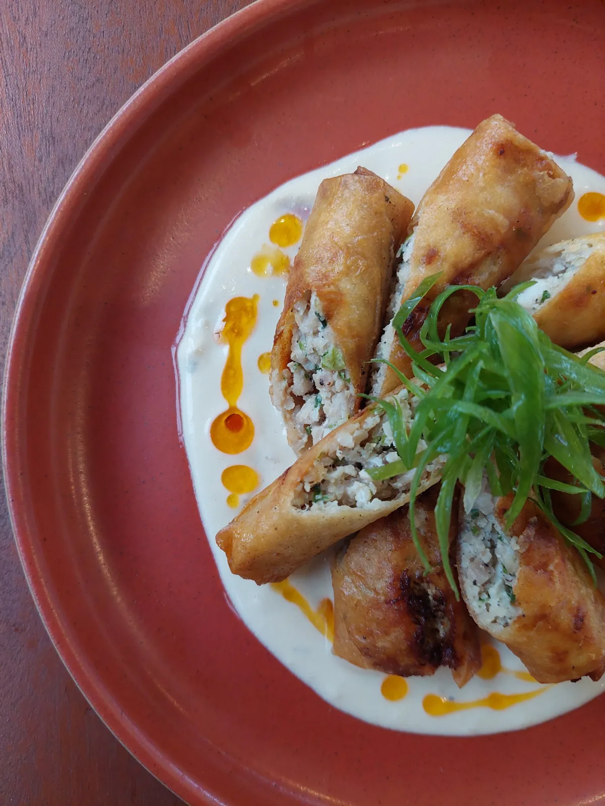
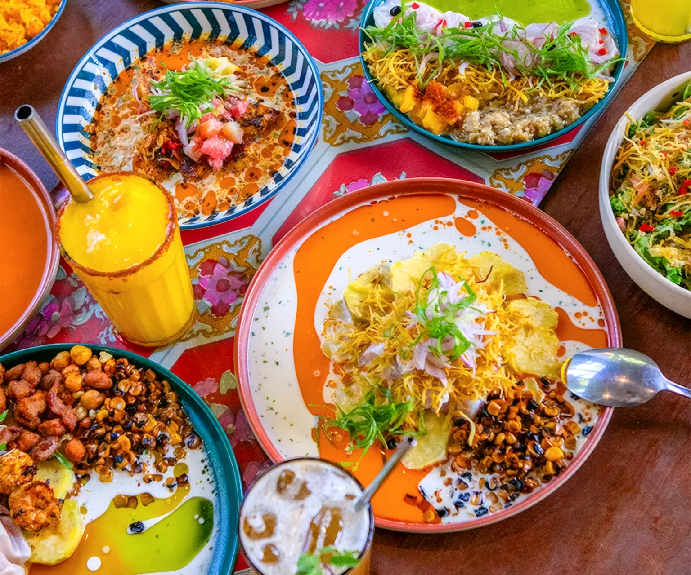
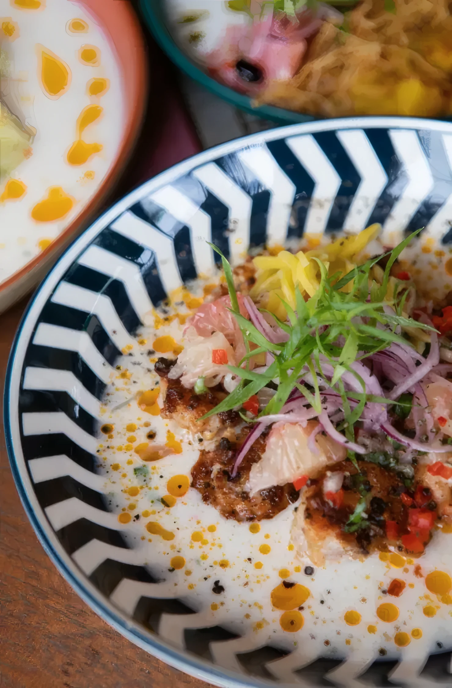
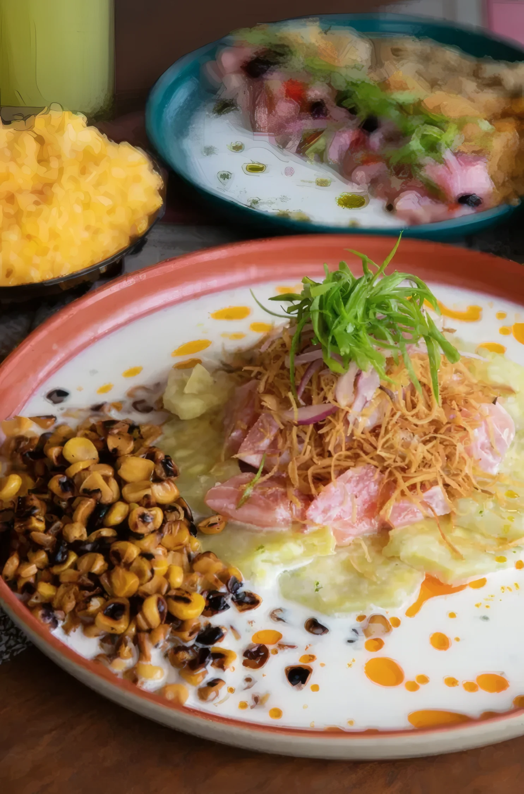
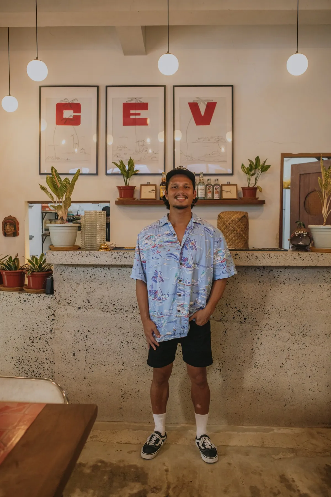
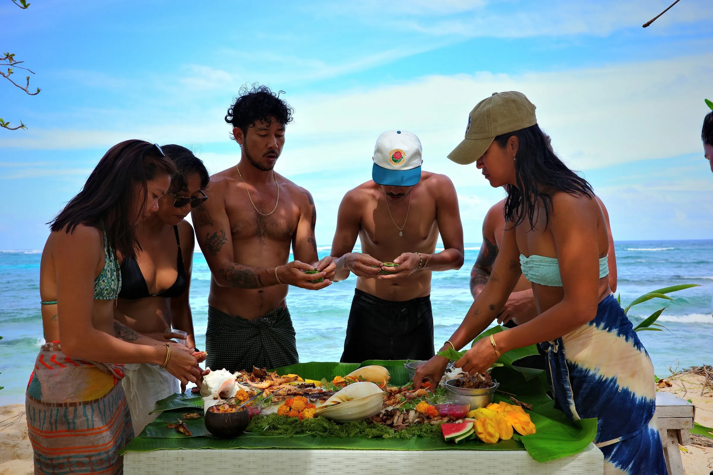

General Luna
Kinilaw of the catch of the day in coconut vinegar and coconut milk, with spiced mango, grilled eggplant, fried sweet potato and salted black beans. With garlic rice.
The catch of the day, cured in vinegar and calamansi, plated as a main and always served with rice. In a bungalow on Tourism Road, General Luna, Siargao.
Reserve a tableCEV is built around kinilaw, the Filipino way of curing raw fish. Chef David del Rosario serves it next to Peruvian-style ceviche, plated as a main and always with rice. The fish of the season decides the menu.
Raw fish cured in vinegar, with ginger, sili, onion and calamansi.
Raw fish cured in lime or lemon, the Peruvian way. The dish gave CEV its name.
“To my knowledge, we are the only country in the world that uses vinegar for a raw fish dish. That is unique, and worth building a concept around.”David del Rosario, chef and owner


“I wanted kinilaw to be talked about more in the conversation on Filipino food.”David del Rosario
Three of the plates marked on CEV’s menu as chef’s recommendations. The fish is the catch of the day.
Kinilaw of the catch of the day in coconut vinegar and coconut milk, with spiced mango, grilled eggplant, fried sweet potato and salted black beans. With garlic rice.

Ceviche of the catch of the day with calamansi and a coconut milk leche de tigre, roasted corn, fried and boiled sweet potato, chili garlic oil.

Minced fish, garlic and celery in a crisp roll, with blue cheese dressing and chili garlic oil.
Also on the menu: Santa Fe, Classic Kinilaw, Santa Monica, Salvacion, Guyam and grilled fish belly.
The full menuThe house sits just off the road and is open to the breeze: a nipa roof over the patio, breeze blocks, jalousie windows. Inside hang photos of fishermen, artwork and surfboards over mismatched chairs. Some guests walk in from the beach with their boards still wet.



“The food here is so good, I even dream about it sometimes. CEV is always on our itinerary every time we come back to Siargao.”
Ileen J., Google, October 2026

“This is my third time in Siargao and my sixth time eating here.”
Chel S., Google, July 2026
David worked as a stockbroker in Manila before he moved to Siargao. He had studied in New York and worked in a cevicheria there, and came home with the idea of giving kinilaw the attention ceviche gets abroad.
CEV started as a small family restaurant. David still greets the guests himself.
“I have no plans to expand CEV beyond Siargao. CEV is perfect the way it is.”David del Rosario
In 2026 CEV took the kamayan out of the restaurant: a shared feast on banana leaves, eaten with the hands, with guest kitchens from Siargao, Manila, Hong Kong and Seattle.
“Something that promotes a strong sense of family, community and freedom.”David del Rosario

Shrimps on the barbie with a passionfruit and sea urchin kinilaw, 50 minutes by boat from General Luna.
A boodle built on kinilaw and sugba, raw and grilled, for the community day of the Siargao Food and Wine Festival.
The finale with Erwan Heussaff, and dessert in a floating nipa hut in the mangroves of Secret Beach.